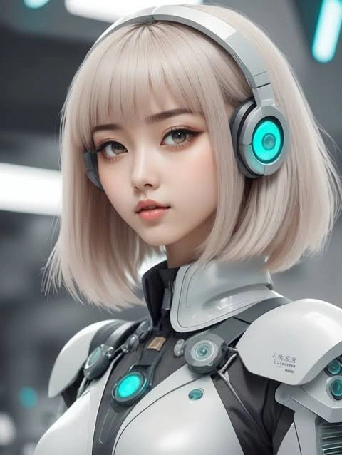

VYRA
VYRA✦ AI PHOTO GENERATOR
Create Stunning Images
Describe your idea, add a reference and customize your creation.

 ✦ VYRA CREATIVE PREVIEW · AI CONNECTION PENDING
✦ VYRA CREATIVE PREVIEW · AI CONNECTION PENDINGAI generation requires a connected provider and secure server-side API. For now, submitting saves a creative brief, not a generated photo or video.